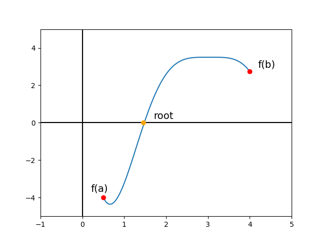
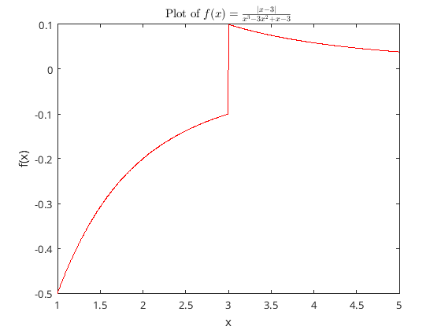

%%file MyBisectionMethod.m
function [c, N] = MyBisectionMethod(f, a, b, tol)
N = 0;
while (b-a)/2 > tol
c = (a + b) / 2;
if f(c) == 0
return
elseif f(a)*f(c) < 0
b = c;
else
a = c;
end
N = N + 1;
disp(['At step ' num2str(N) ' approximation is ' num2str((a+b)/2)])
end
endLab 2 - Bisection Method
Introduction
The bisection method is a numerical method for finding the root of a continuous function \(f(x)\) that lies between two points \(a,b\) where \(f(a)f(b)<0\). This means that \(f(a)\) and \(f(b)\) are of opposite sign, and thus there must be a root between \(a\) and \(b\). An example of a function like this is shown in Figure 1.

The concept that underpins the bisection method is that as long as \(f(a)f(b)<0\), there is guaranteed to be a root between \(a\) and \(b\). Since the initial interval \((a,b)\) is given, the method can iteratively make smaller and smaller intervals whose endpoints satisfy the condition \(f(a)f(b)<0\). Specifically, the method halves the interval at each step which is what gives it the name “bisection” method. The details of the method can be most easily summarized in the following “pseudocode” algorithm.
Given the initial interval \([a,b]\), the function \(f\) where \(f(a)f(b) < 0\), and an ending tolerance, \(tol\) (the size of the final interval), we compute:
% While half the interval is bigger than the given accuracy tolerance
while (b-a)/2 > tol
% c = the midpoint of a and b
% If f(c) = 0, stop -- this would be lucky (c=root)!
% If f(a)f(c) < 0, then b=c -- the root is between a and c
% Else, a=c -- the root is between c and b
end
% The final c is an approximate rootNote that this formula does not depend on what the function \(f\) is. This is a nice property of the bisection method since it allows you to write one piece of code that can be used for any function. Other methods you will see later in this class use information about the function \(f\) (such as the derivative) to get faster convergence. However, these methods are also usually do not work for all functions \(f\). This is a classic tradeoff in numerical methods (between the generality and speed of the method).
Examples
Here I’ll write a bisection method function that takes in \(f\), \(a\), \(b\) and \(tol\) and outputs the approximate root \(c\) and the number of steps taken, \(N\). At each step, the function prints the step number and the current approximate root (the midpoint of the current interval).
Matlab function
Find root of simple function
Now, using this bisection method code on the function \(f(x)=x^2-7\) to find the root \(\sqrt{7}\) with interval \([-1,3]\) and a tolerance of \(10^{-5}\):
a = -1;
b = 3;
tol = 1e-5;
f = @(x) x.^2 - 7;
[root,steps] = MyBisectionMethod(f, a, b, tol);
true = sqrt(7);
answer = ['The true root is ' num2str(true) ' while our approximation is ' num2str(root)];
disp(answer)At step 1 approximation is 2At step 2 approximation is 2.5At step 3 approximation is 2.75At step 4 approximation is 2.625At step 5 approximation is 2.6875At step 6 approximation is 2.6562At step 7 approximation is 2.6406At step 8 approximation is 2.6484At step 9 approximation is 2.6445At step 10 approximation is 2.6465At step 11 approximation is 2.6455At step 12 approximation is 2.646At step 13 approximation is 2.6458At step 14 approximation is 2.6456At step 15 approximation is 2.6457At step 16 approximation is 2.6457At step 17 approximation is 2.6457At step 18 approximation is 2.6457The true root is 2.6458 while our approximation is 2.6457Theoretically, this should take \[ \begin{align*} N=-1 + \log_2\frac{b-a}{\mathrm{Tol}} \end{align*} \] steps on the interval \((a,b)\) with tolerance \(Tol\):
theoryN=log2((b-a)/tol) - 1; % the value of N as predicted by the formula from class
answer = ['We took ' num2str(steps) ' steps while the theory predicts we should take ' num2str(theoryN) ' steps'];
disp(answer)We took 18 steps while the theory predicts we should take 17.6096 stepsFind root of discontinuous function
The method does have some drawbacks in the context of discontinuities. For example, consider the function: \[ \begin{align*} f(x) = \frac{|x-3|}{x^3 - 3 x^2 + x -3} .\end{align*} \] on the interval \([1, 5]\) which plotted looks like:
fFun = @(x) abs(x-3) ./ (x.^3 - 3.*x.^2 + x - 3);
X = linspace(1,5,1000);
Y = fFun(X);
plot(X,Y,'-r','LineWidth',1); % plot the function
xlabel('x');
ylabel('f(x)');
title('Plot of $f(x)=\frac{|x-3|}{x^3-3x^2+x-3}$','interpreter','latex');
Applying the bisection code on this interval with a tolerance of \(10^{-4}\) gives:
[c3,N3] = MyBisectionMethod(fFun,1,4,1e-4);At step 1 approximation is 3.25At step 2 approximation is 2.875At step 3 approximation is 3.0625
At step 4 approximation is 2.9688At step 5 approximation is 3.0156At step 6 approximation is 2.9922At step 7 approximation is 3.0039At step 8 approximation is 2.998At step 9 approximation is 3.001At step 10 approximation is 2.9995At step 11 approximation is 3.0002At step 12 approximation is 2.9999At step 13 approximation is 3.0001At step 14 approximation is 3Although the function returned a answer, since the function is discontinuous, the answer does not represent a root.